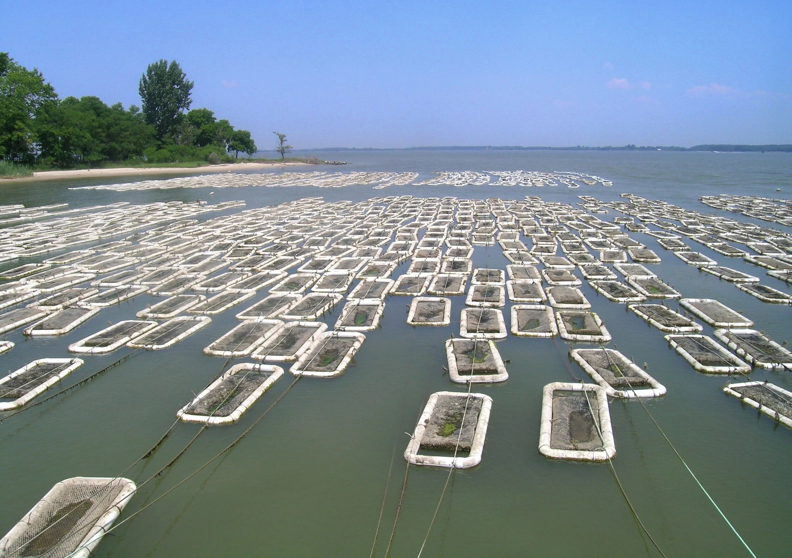
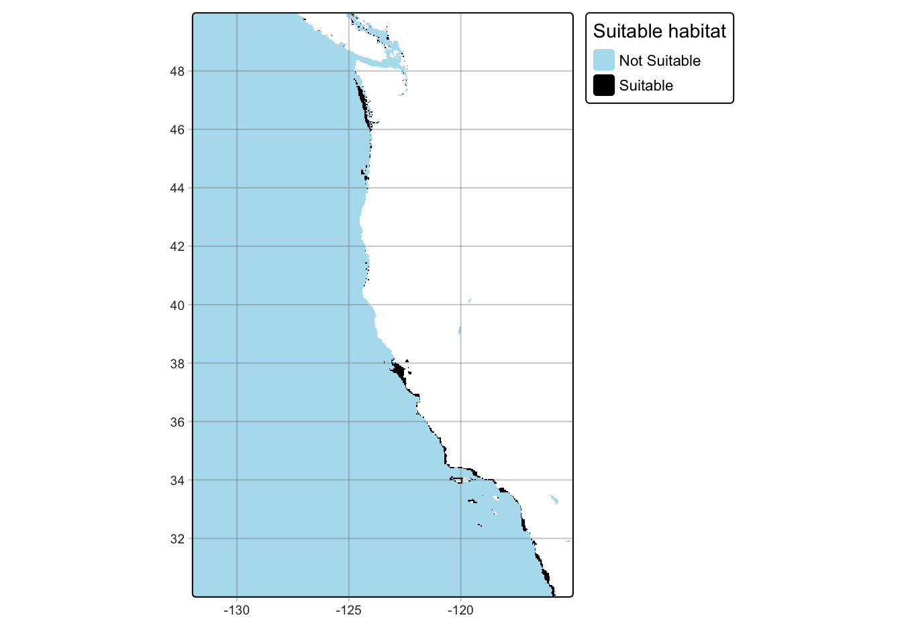
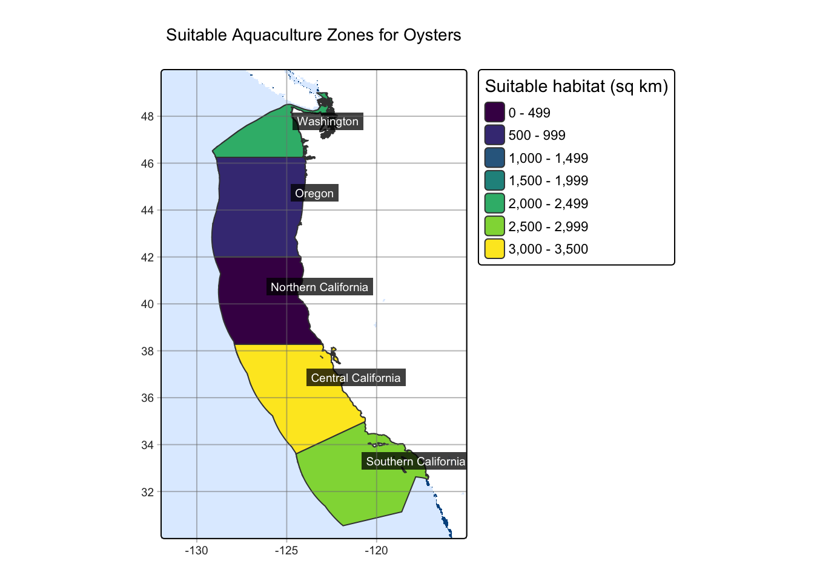

Code
# Reclassify temperature data
rcl_temp <- matrix(c(-Inf, 11, 0,
11, 30, 1,
30, Inf, 0),
ncol = 3, byrow = TRUE)
temp_reclass <- classify(mean_sst, rcl = rcl_temp)
Marine aquaculture is a growing source of food in many areas around the world, yet remains wildly under-utilized in the United States. The U.S. imports between 70% and 85% of its seafood, with more than half of that comes from aquaculture1. By increasing production of aquaculture in the U.S., we can find economic benefit and meet growing seafood demands. It has the capability of producing more sustainable protein options than land-based meat2. A study by Gentry et al. mapped the potential for marine aquaculture globally based on multiple constraints, including ship traffic, dissolved oxygen, and bottom depth. They found that global seafood demand could be met using less than 0.015% of the global ocean area3.
In this project, I aim to visualize suitable areas for aquaculture of Oysters and Red Abalone along the west coast. Additionally, I created a function that will produce a suitability map for any species with habitat depth and temperature ranges. This project can help provide data to support future aquaculture along the west coast.
Information for both Oysters and Red Abalone temperature and depth ranges come from SeaLifeBase4.
To determine the average seat surface temperature across the west coast an average from 2008-2012 data was calculated. Rasters were created by NOAA using satellite data from Coral Reef Watch5.
Depth data comes from General Bathymetric Chart of the Oceans (GEBCO)6.
The West Coast Exclusive Economic Zone data represents designated coastal areas designating state control over the natural resources. These maritime boundaries come from marineregions.org7.
Because I am working with geospatial data, there is a lot data wrangling and transforming that needs to be done. I have to ensure that the raster data is compatible to be stacked. This includes matching the projections, resolution and extent. Additionally, the non-raster data needs to transformed so it can be used with the temperature and depth rasters.
Find suitable habitat Suitability was determined using depth and temperature ranges for species. These values were taken from the Sea Surface Temperature (SST) and Bathymetry rasters. This was done by assigning 0’s and 1’s to the original depth and temperature rasters based on suitable ranges.
All temperature rasters from 2008 to 2012 are stacked. The mean of all temperature rasters is taken to determine the average sea surface temperature. The temperature is converted from Kelvins to degrees celsius.
In order to determine suitable areas of habitat, reclassification matrices are created to assign 1’s to areas within the suitable temperature and depth ranges for Oysters. Areas without suitable depth and temperature ranges get assigned a 0. The CRS, extent, and resolution of the reclassified depth raster are updated to match the reclassified temperature raster. The updated depth and temperature rasters are multiplied together to determine which areas are suitable in both temperature and depth requirements. Any cell with a 1 in both temperature and depth will remain 1, while any cell without suitable depth or temperature ranges, or both, will be 0.
# Reclassify temperature data
rcl_temp <- matrix(c(-Inf, 11, 0,
11, 30, 1,
30, Inf, 0),
ncol = 3, byrow = TRUE)
temp_reclass <- classify(mean_sst, rcl = rcl_temp)To determine the suitable habitat, the reclassified temperature and depth rasters of 0’s and 1’s are multiplied together, resulting in 1’s only in cells that had a suitable depth and temperature range and 0’s in all other cells.
# Reclassify depth data
rcl_depth <- matrix(c(-Inf, -70, 0,
-70, 0, 1,
0, Inf, 0),
ncol = 3, byrow = TRUE)
depth_reclass <- classify(depth, rcl = rcl_depth)# If-else statement to check/update CRS
if (crs(depth_reclass) == crs(temp_reclass)){
print("Projections match!")
}else {
crs(depth_reclass) <- crs(temp_reclass)
warning("Updating depth CRS")
}
# Match resolutions of rasters
depth_resample <- resample(depth_reclass, temp_reclass, method = "near")
# Match extents of depth and temp rasters
cropped_depth <- crop(depth_resample, temp_reclass)
# Stack temperature and depth rasters
temp_depth <- c(temp_reclass, cropped_depth)# Multiply temperature and depth rasters together
ocean <- temp_reclass * cropped_depthOnce the suitable habitat is found, it can be visualized to see the areas along the west coast.
# Looking at suitable habitat based on new raster
tm_shape(ocean) +
tm_raster(col.scale = tm_scale(
breaks = c(0,1,Inf),
values = c("lightblue2", "black"),
labels = c("Not Suitable", "Suitable")),
col.legend = tm_legend(
title = "Suitable habitat",
position = tm_pos_out("right", "center")
)) +
tm_grid(alpha = 0.4)
While I found the cells within the raster that have suitable habitat, raster data is in a cell by cell format, which does not give an actual size of suitable habitat. I want to see the bigger picture of these suitable cells and how that reflects in the Exclusive Economic Zones (EEZ) on the coast. This can be done through combining the EEZ data with the suitability raster and calculating the number of suitable cells in each region. Once the amount of cells per region is quantified, I can calculate the total area of the suitable by finding the cell size in km^2 and multiplying that by the number of cells.
| Region | Number of cells with suitable habitat | Area of suitable habitat (sq km) |
|---|---|---|
| Central California | 238 | 3296.1331 |
| Southern California | 211 | 2922.2021 |
| Washington | 162 | 2243.5864 |
| Oregon | 71 | 983.3002 |
| Northern California | 11 | 152.3423 |
Now that there is a calculated area of suitable habitat for each region, I can visualize it. My results show that the Central California region, followed by Southern California is the most suitable for Oyster aquaculture.
# Map the results
tm_shape(ocean) +
tm_raster(col.legend = tm_legend(show = FALSE)) +
tm_shape(suitable_habitat) +
tm_polygons(fill = "suitable_habitat",
fill.scale = tm_scale(values = "viridis"),
#breaks = c(0,200,1000,2500,3000, Inf)),
fill.legend = tm_legend(title = "Suitable habitat (sq km)")) +
tm_text(text = "rgn", # Add labels for each region
col = "white",
size = 0.6,
xmod = 4,
ymod = 1,
bgcol = "black",
bgcol_alpha = 0.75)+
tm_grid(alpha = 0.5) +
tm_title("Suitable Aquaculture Zones for Oysters")
After successfully determining aquaculture habitats for Oysters, I can generalize my code into a function, which will produce a habitat suitability map for any species with specified depth and temperature ranges.
aquaculture_zones <- function(species, min_depth, max_depth, min_temp, max_temp){
# Temp reclassification
rcl_temp <- matrix(c(-Inf, min_temp, 0,
min_temp, max_temp, 1,
max_temp, Inf, 0),
ncol = 3, byrow = TRUE)
temp_reclass <- classify(mean_sst, rcl = rcl_temp)
# Depth reclassification
rcl_depth <- matrix(c(-Inf, min_depth, 0,
min_depth, max_depth, 1,
max_depth, Inf, 0),
ncol = 3, byrow = TRUE)
depth_reclass <- classify(depth, rcl = rcl_depth)
# Adjust CRS to match
crs(depth_reclass) <- crs(temp_reclass)
# Match resolutions of rasters
depth_resample <- resample(depth_reclass, temp_reclass, method = "near")
# Match extents of depth and temp rasters
cropped_depth <- crop(depth_resample, temp_reclass)
# Create raster denoting suitable depth AND temperature ranges
ocean <- cropped_depth * temp_reclass
# Change EEZ CRS
st_crs(eez) <- crs(ocean)
# Mask ocean data outside of EEZ regions
ocean_mask <- mask(ocean, eez)
# Rasterize eez data based on ocean mask
eez_raster <- rasterize(eez, ocean_mask,
field = "rgn")
# Add up number of suitable cells per region
suitable_cells <- zonal(ocean_mask, eez_raster, fun = "sum", na.rm = TRUE)
# Determine cell size
cell_area <- cellSize(ocean_mask, unit="km")[1]
# Calulcate area of suiable habitat based on number of suitable cells and cell size
suitable_cell_area <- suitable_cells %>%
rename(cells = depth) %>%
mutate(cell_area = cell_area$area,
suitable_habitat = cells * cell_area) %>%
select(-cell_area)
# Join EEZ regions and suitable area
suitable_habitat <- left_join(eez, suitable_cell_area, by = "rgn")
# Create map
tm_shape(ocean) +
tm_raster(col.legend = tm_legend(show = FALSE)) +
tm_shape(suitable_habitat) +
tm_polygons(fill = "suitable_habitat",
fill.scale = tm_scale(values = "viridis"),
#breaks = c(0,200,1000,2500,3000, Inf)),
fill.legend = tm_legend(title = "Suitable habitat (sq km)")) +
tm_text(text = "rgn",
col = "white",
size = 0.6,
xmod = 4,
ymod = 1,
bgcol = "black",
bgcol_alpha = 0.75)+
tm_grid(alpha = 0.5) +
tm_title(paste("Suitable Aquaculture Zones for", species))
}
Red Abalone were previously a popular fishery across the west coast, however the fishery closed in 2018 due to declining populations. The only source of Red Abalone on the west coast is currently through aquaculture. Because this species was a popular fishery and still has demand across the west coast, utilizing aquaculture zones along the coast would increase supply for this sought after mollusk. The depth range for Red Abalone is 0-24m and the temperature range is 8-18 ºC.
aquaculture_zones(species = "Red Abalone", min_depth = -24, max_depth = 0, min_temp = 8, max_temp = 18)
There are some limitations to the map. While it does provide areas of suitable habitat, it does not factor in species natural habitat, as my results show that Washington has the most suitable habitat for Red Abalone but are not part of Red Abalone’s natural range. It should also be pointed out that these are a subtidal species, and the temperature data used was sea surface temperature. This means that the temperature data may not be representative of true habitat ranges for species, especially those that live at deeper depths.
National Oceanic and Atmospheric Administration. (2022). U.S. Aquaculture. NOAA Fisheries. https://www.fisheries.noaa.gov/national/aquaculture/us-aquaculture. [Accessed Dec. 6, 2025]↩︎
Hall, S. J., Delaporte, A., Phillips, M. J., Beveridge, M. & O’Keefe, M. Blue Frontiers: Managing the Environmental Costs of Aquaculture (The WorldFish Center, Penang, Malaysia, 2011).↩︎
Gentry, R. R., Froehlich, H. E., Grimm, D., Kareiva, P., Parke, M., Rust, M., Gaines, S. D., & Halpern, B. S. Mapping the global potential for marine aquaculture. Nature Ecology & Evolution, 1, 1317-1324 (2017).↩︎
Palomares, M.L.D. and D. Pauly. Editors. 2025. SeaLifeBase. World Wide Web electronic publication. www.sealifebase.org, version (04/2025). [Accessed Novemeber 29, 2025]↩︎
NOAA Coral Reef Watch. 2019, updated daily. NOAA Coral Reef Watch Version 3.1 Daily 5km Satellite Regional Virtual Station Time Series Data for Southeast Florida, Mar. 12, 2013-Mar. 11, 2014. College Park, Maryland, USA: NOAA Coral Reef Watch. Data set accessed 2020-02-05 at https://coralreefwatch.noaa.gov/product/vs/data.php.↩︎
Bathymetry data was obtained through open access on November 29, 2025 from the GEBCO Grid↩︎
Flanders Marine Institute (2025): MarineRegions.org. Available online at www.marineregions.org. Consulted on 2025-11-29.↩︎